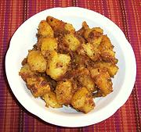

|
Potato MasalaIndia - Andhra Pradesh (Madras) - Kelanga Ghashashi | ||||
| Serves: Effort: Sched: DoAhead: |
6 side ** 50 min Yes |
A flavorful but mildly spiced dryish recipe that makes a fine appetizer, or a side dish to more liquid dishes. It can also be used a a side with Western meat dishes. | |||
|
1-1/4 12 1/2 4 2 2 1-1/2 2 1/4 1/2 1 1 1/2 2 1/2 |
# oz in cl T T t t t t t t T t |
Potatoes, waxy Onion Ginger Garlic Chili Serrano Cilantro, chopped Lime juice Coriander seed Turmeric Chili, ground red Poppy seed white Sesame seed white Cumin seed Ghee / Oil Salt |
PREP - (25 min)
|